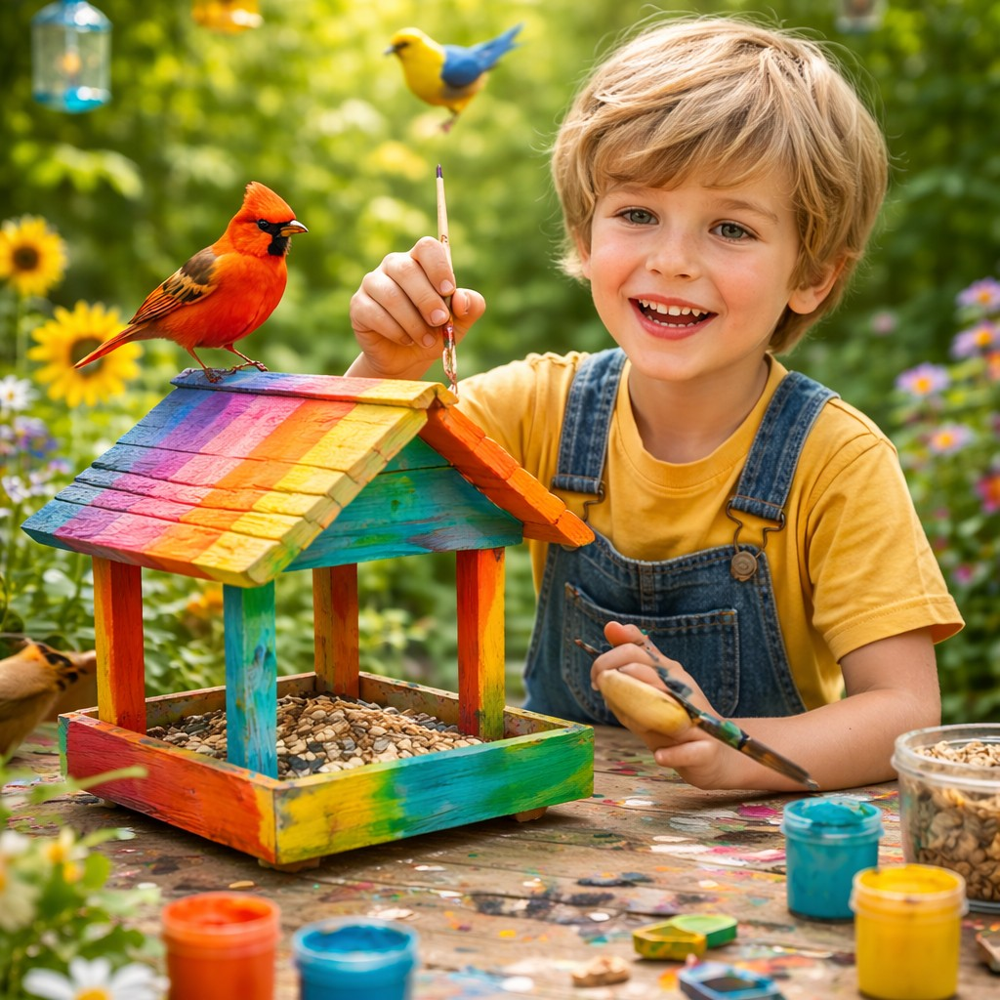
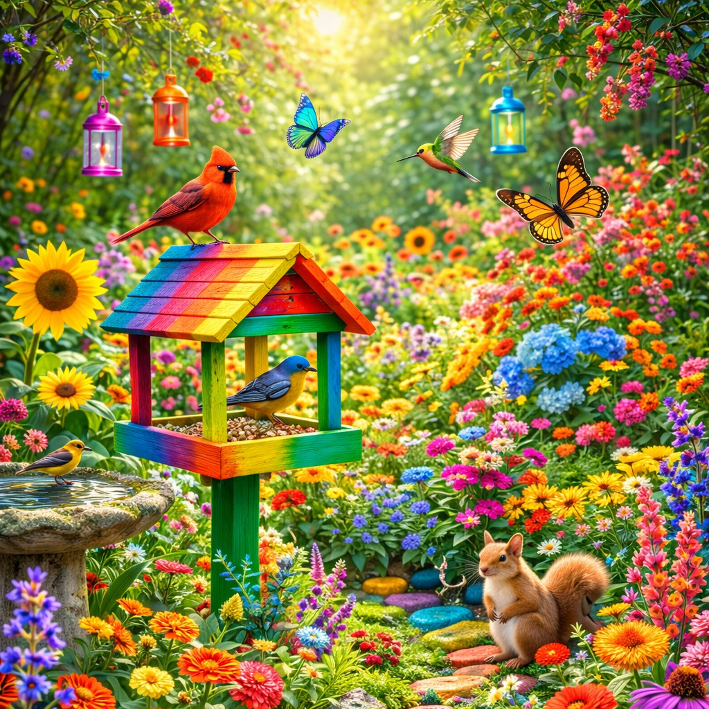
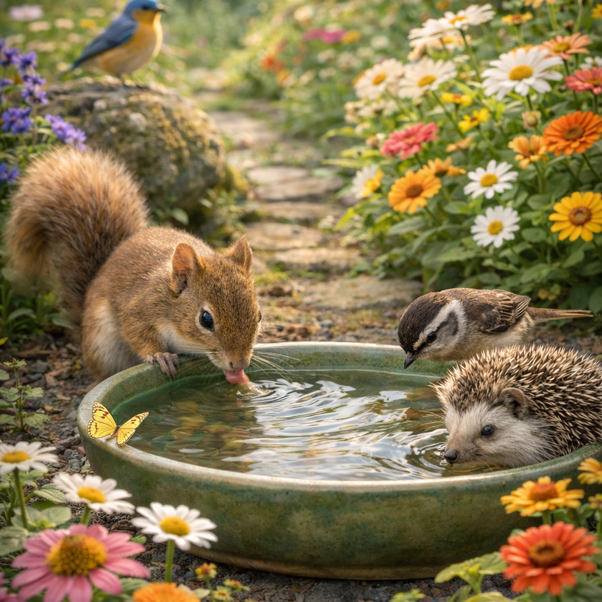
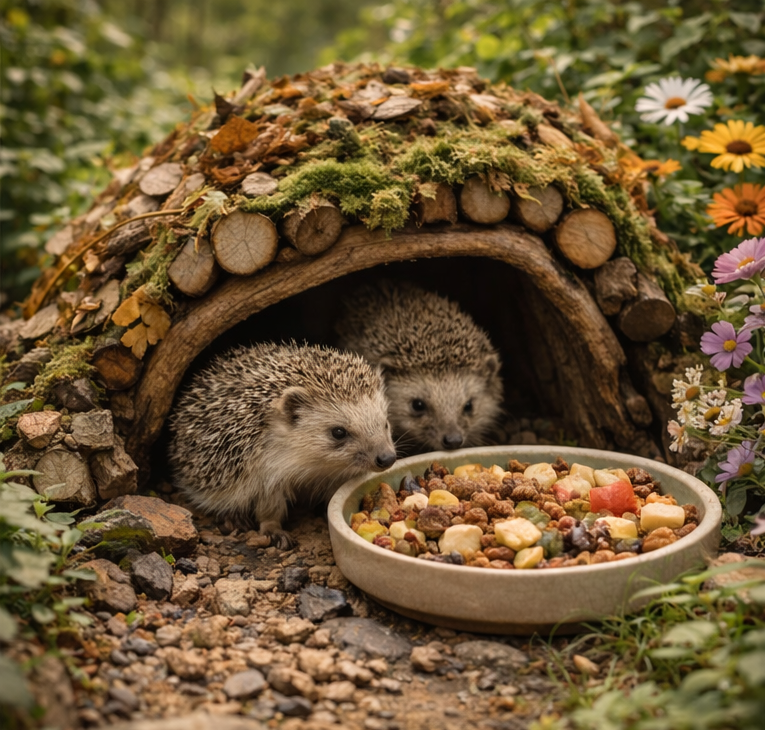
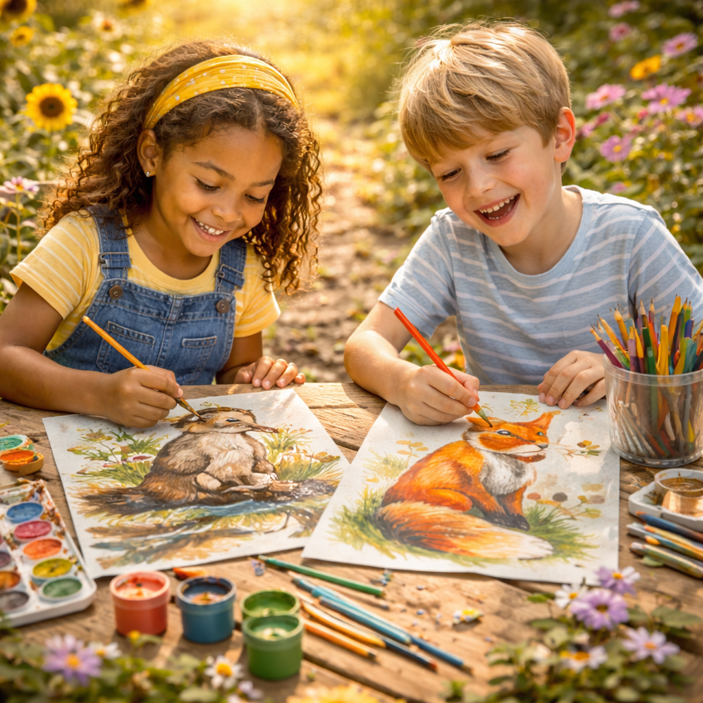
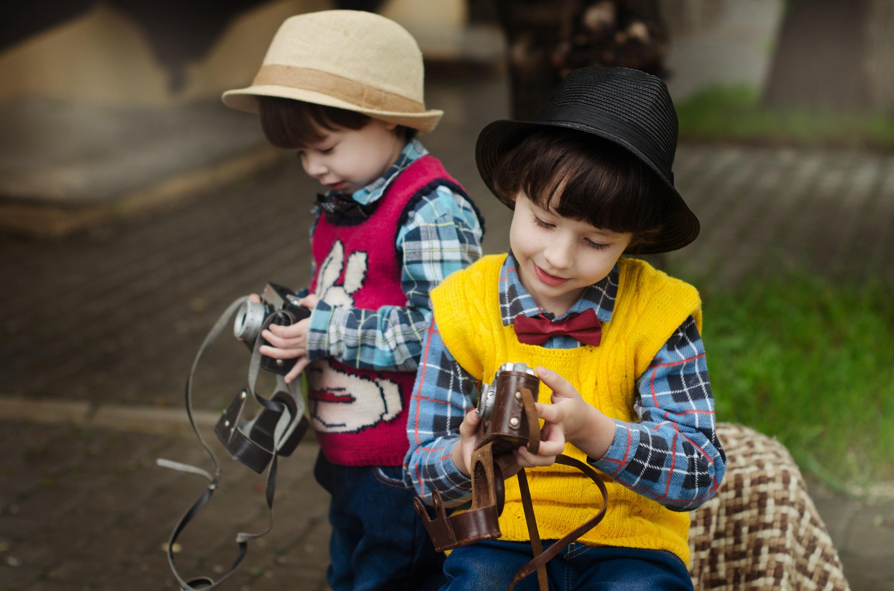

Fun Wildlife Tips for Kids
Here are some fun ways you can help wildlife, learn about animals, and become a nature hero!

1. Build a Bird Feeder
Help birds find food during the winter by making a simple bird feeder using peanut butter and seeds!

2. Create a Wildlife Garden
Plant flowers, shrubs, and trees to attract insects and birds to your garden. They’ll love it!

3. Save Water for Animals
Make sure to leave out a shallow bowl of water for animals to drink, especially in hot weather!

4. Help Hedgehogs
If you see a hedgehog in your garden, make sure it's safe! Build a little shelter and leave food out for them.
Fun Activity: Draw Your Favorite Animal!

Pick your favorite animal from the list below and draw it! Don’t forget to add some cool details like fur, feathers, or scales!
- Red Fox
- Hedgehog
- Barn Owl
- Otter
Wildlife Spotter Camera
Take a photo safely. Never approach wildlife—use zoom and keep your distance.
